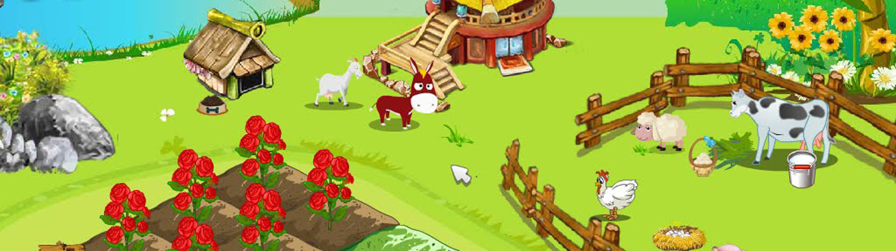

Colheita Feliz foi um dos maiores sucessos da finada rede social Orkut. Desenvolvido pela chinesa Elex e distribuído pela norte-americana Mentez, o jogo era um simulador de fazendinha em tempo real, onde os jogadores plantavam sementes virtuais, cuidavam dos animais e administravam uma fazenda virtual.
O objetivo do jogo era plantar sementes e flores, e depois colhê-las e vendê-las. Os jogadores deveriam retirar as pragas e as pestes que danificavam sua plantação e regá-las quando estivessem secas. O jogo rapidamente se tornou popular entre os usuários do Orkut, com muitos jogadores se tornando vizinhos virtuais e ajudando uns aos outros a cuidar de suas fazendas.
Apesar de não estar mais disponível no Orkut, Colheita Feliz ainda tem uma base de fãs fiel, com muitos jogadores ainda se lembrando com carinho do tempo que passaram cuidando de suas fazendas virtuais. Se você nunca jogou Colheita Feliz, agora é a hora perfeita para experimentar este clássico jogo de simulação! 😊